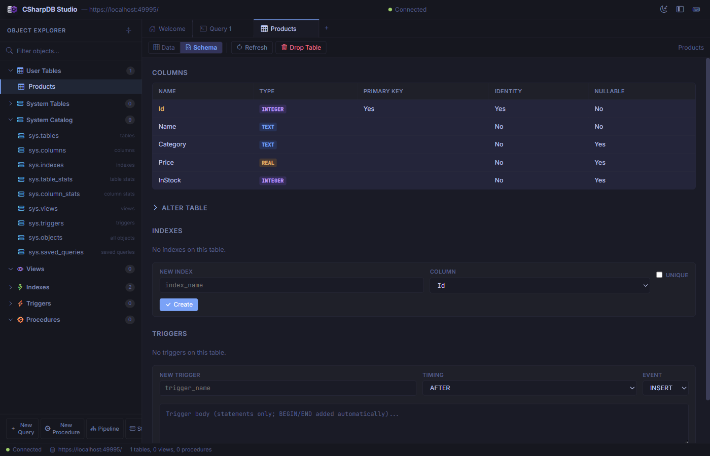

Browse Data and Manage Schema
Open database objects from Object Explorer to inspect records, edit values, create schema objects, and verify database structure.
Tables and Views
Click a table or view to open a data tab. The grid supports paging, sorting, filtering, selection, and inline edits when the source is writable.

The data browser shows row values, column filters, sort state, and pending edits.
- Use column filters to narrow the visible rows.
- Click column headers to sort ascending or descending.
- Use Add Row, Delete Rows, Save, and Discard for editable tables.
- Use page size and pager controls for large tables.
System Catalog and Internal Storage
System Catalog contains the supported read-only sys.* views for tables, columns, relationships, constraints, functions, temporary objects, statistics, and feature metadata. Open an entry to inspect its current rows with the suggested query.
Internal Storage shows the physical tables maintained by CSharpDB and Studio features. These backing tables are shown for troubleshooting and inventory only. Select one to open its filtered sys.internal_tables record; use the logical replacement shown beside it for normal work.
| Backing table | Use instead |
|---|---|
__data_model_diagrams | sys.diagrams and the Data Model workspace |
__external_tables | sys.external_tables and External Tables |
__saved_queries | sys.saved_queries and saved queries |
_col_* | The corresponding collection in Object Explorer |
Collections
Collections contain JSON documents keyed by document id. Collection tabs show document keys, JSON kind, compact previews, and a formatted JSON detail panel.
- Open existing collections from Object Explorer.
- Create documents with a nonblank key and valid JSON.
- Save writes through the collection client API.
- Delete removes selected documents after confirmation.
Schema Designer
Use table schema tabs to inspect columns, constraints, indexes, triggers, and related forms. Schema edits should be deliberate because they change database structure.

Schema view combines inspection and creation tools for table structure.
| Section | Purpose |
|---|---|
| Columns | Review names, data types, primary key state, identity state, and nullability. |
| Alter Table | Add or drop columns using guided forms. |
| Indexes | Inspect or create indexes, including unique indexes. |
| Triggers | Inspect or create trigger definitions for insert, update, or delete events. |
Data Modeler
Use the Data Model workspace to choose tables, inspect relationships, organize groups, adjust connector bends, and save readable diagrams. Schema edits are staged separately, reviewed as SQL, and applied only when you choose to do so.
Query Editor
Use query tabs for ad hoc SQL, saved queries, query plans, table stats, column stats, and result review.
| Action | Description |
|---|---|
| Run | Executes SQL and shows results, row count, and elapsed time. |
| Estimate | Runs EXPLAIN ESTIMATE FOR to show query-estimation inputs and planner decisions without executing the target query. |
| Analyze | Runs ANALYZE to collect persisted table, column, histogram, and index-prefix statistics for the query planner. |
| Format | Reformats SQL for readability. |
| Save | Stores reusable SQL in the saved query catalog. |